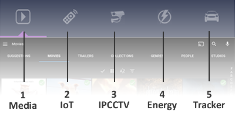

Wave® Smart Home Intro¶
The Wave® Smart Home™ is made up of a wide range of Wave® products and services. Each product and service has its own seperate Operation Manual/ User Guide. As you will see below, each of these documents first introduces the Wave® Smart Home™ solution as a whole. Information relative to the specific product/ service named in this documents title is listed afterwards - in the ‘About this Product’ section.
Image 1.0 - Wave® Smart Home™

Wave® is a Highly Affordable, All-in-One, Complete Smart Home Solution. It’s modular, plug & play and works right out of the box - making it today’s easiest and fastest way to transform any house into a fully-intergrated digital smart home. The Wave® Smart Home™ solution is also the worlds first technology to reduces households internet and energy bills each month, completely autonomously, while users enjoy the products state of the art smart home features. which include;
- Multi-Room Media (DLNA - Music, Movies & IPTV Streaming)
- Wireless Home Control (IoT, Smart Plug Sockets, Lights etc)
- IP Camera Monitoring (+25 IP Cameras, DVR & Motion Detect)
- Energy Monitoring (Self-Labelling, simple interface & Deep Energy Consumption Analysis)
- Vehicle Tracking (USSD/ Non-Subscription & Carrier Free, & battery level status)
- Multi-User Support (access the Wave® Dashboard™ from multiple devices, simultaniously, through any web-browser)
- Access the Wave® Dashboard™ from Anywhere in the world using the Free Wave® Remote (Remote Access) Mobile App
Wave® Operating System¶
For simplicity each product in the Wave® Smart Home™ uses the exact same hardware device and operating system. The hardware devices are known as Single Board Computers (SBC’s). The software is known as the Wave® Operating System (WaveOS™) and runs all of the devices in the Wave® Smart Home™.
WaveOS™ is Free, Open-Source and is held on a Micro SD Card inside of every Wave® Smart Home™ product. WaveOS™ will boot the device up, establish an internet connection and generate a Wi-Fi Hotspot autonomously. The operator can then connect their device to the Wi-Fi Hotspot and complete initial set-up via their web-browser.
To complete initial set-up the operator must simply select which Edition of WaveOS™ they’d like installed to the device. The Edition of WaveOS™ installed will determine which product the device will become (or which function the device will serve within the Smart Home™). For example, if the operator selects the Home Hub™ Edition of WaveOS™, it will transform the device a Wave® Home Hub™. The initial installation is done via a web browser menu (no programming skills requires), it’s one-click, fully autonomous and takes only a few minutes.
Wave® Enhacement Products¶
With the exclusion of the Wave® Home Hub™ and Neo Dome™, all products from Wave® are considered Enhancement Products since they are designed to enhance the experience and performance of the Home Hub™ and Neo Dome™. The quantity and configuration of these enhancement products will depend on the size of the users home, occupants and their personal preferences. Below is a list of the full range of Wave® Enhacement Products:
| Name | Description |
|---|---|
| Wave® Energy Monitor™ | Deep Analysis of Energy Consumption |
| Wave® Vehicle Tracker™ | Real-Time Location of Vehicle (USSD - FREE Cellular Channel) |
| Wave® Extender™ Link | Wirelessly sends the Home Hub™ Dashboard to any TV Display. HDMI Connection |
| Wave® Signal Booster™ | Extends Wi-Fi Signal Strength - Re-broadcasts Home Hub™ SSID |
| Wave® Storage Device™ | 4TB of Raid 10 NAS Storage - for use with the Home Hub™ |
- NOTES:
- The products above are to enhance the Wave® Home Hub™, and the Wave® Neo Dome™,. They DO NOT function independantly of the Home Hub™ and/or Neo Dome™. Please ensure you have one of the Wave® core products in place, before expecting full enjoyment and use of the above Enhacement Products.
Wave® Home Hub™¶
A Wave® Smart Home describes, at the very least, a Wave® Home Hub™ with at least one Wave® Enhacement Product connected to it. The Home Hub™ is effectively Wi-Fi Hotspot with a built in server, which hosts a number of smart home applications. Any device connected to the hotspot (locally and remotely) may access these applications via any modern web browser. For convenience and ease of use, all of the applications hosted on the Home Hub™ are embedded into one interface called The Dashboard™.
Image 1.1 - Wave® Home Hub™

Wave® Dashboard™¶

- Tab 1 - Media Library: Featuring Movies, Music, IPTV, Latest Trailers, TV Shows
- Tab 2 - IoT Home Control: Scan your Wi-Fi for Things to Control, Add buttons to control your Things
- Tab 3 - IP Camera DVR: Scan your Wi-Fi for IP Camera Monitor to monitor. Includes Motion Detect and loopback recording.
- Tab 4 - Energy Monitor: Receives info from the Wave® Energy Monitor and displays connected items, their energy consumption and on/off status.
- Tab 5 - USSD/GPS Tracking: Receives info from the Wave® USSD/GPS Tracker and displays location and battery status.
Image 1.1 - Wave® Home Hub™ - Dashboard™
Tab 1 - Media Library¶
Featuring Movies, Music, IPTV, Latest Trailers, TV Shows
Tab 2 - Home Control¶
Scan your Wi-Fi for Things to Control, Add buttons to control your Things
Tab 3 - IP Camera DVR¶
Scan your Wi-Fi for IP Camera Monitor to monitor. Includes Motion Detect and loopback recording.
Tab 4 - Energy Monitor¶
Receives info from the Wave® Energy Monitor and displays connected items, their energy consumption and on/off status.
Tab 5 - USSD/GPS Tracking¶
Receives info from the Wave® USSD/GPS Tracker and displays location and battery status.
Key Facts about the Wave® Home Hub™:
- Primarily a Wi-Fi Hotspot with built in Media Center (with IPTV), IP Camera Monitor & DVR and IoT Smart Device Controls
- Connects to existing Internet Router (ethernet port & cable)
- Works independantly or with enhancement products and/or accessories
- Functions most effectively when all wireless devices connect exclusively to the Wave® Wi-Fi Hotspot
- Not designed to replace or function as a replacement internet modem/ router hotspot.